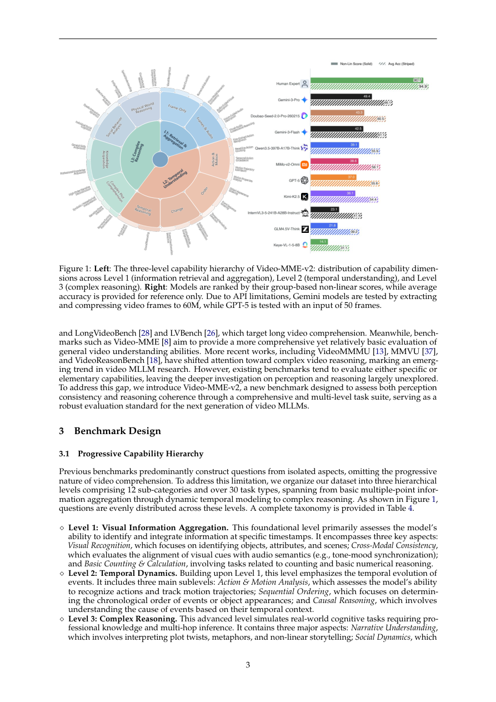

#1
★ 8/10
Video-MME-v2: Towards the Next Stage in Benchmarks for Comprehensive Video Understanding
Video-MME-v2：迈向综合视频理解基准测试的下一阶段

图 Figure · Page 3 of paper
🎯 分层任务+组合评分，精准暴露视频多模态大模型真实短板
A rigorous new video benchmark with hierarchical tasks and group-based scoring to expose real MLLM limitations.
| 维度 | 中文 | English |
|---|---|---|
| ❓ 待解决 的问题 |
现有视频理解基准已趋于饱和，模型在排行榜上得分很高，但实际能力并不匹配。这种"刷榜"现象掩盖了模型真实的视频理解水平。领域亟需一个更严格、更难的评测基准来真实区分模型能力。 | Existing video understanding benchmarks are becoming saturated — top models score very high on leaderboards, but this doesn't reflect real-world capability. There is a growing gap between benchmark scores and what models can actually do. The field needs a harder, more rigorous testbed that can meaningfully differentiate strong models from weak ones. |
| 💡 解决 的亮点 |
• 渐进式三级层级体系：任务从多点视觉信息聚合 → 时序动态建模 → 复杂多模态推理逐层递进，迫使模型展示真实的分层理解能力。\n• 基于组的非线性评估策略：相关问题作为一组整体打分，而非逐题独立计分，碎片化或猜测性正确答案会被惩罚，只有有效推理链支撑的答案才能得分。\n• 严格的人工标注流程：耗时3300人时，12名标注员、50名独立审核员、最多5轮质量审查，确保数据质量权威可信。 | • Progressive tri-level hierarchy: tasks scale from basic visual aggregation → temporal dynamics modeling → complex multimodal reasoning, forcing models to demonstrate layered understanding.\n• Group-based non-linear evaluation: instead of scoring each question independently, related questions are scored as a group — partial or guess-based correct answers are penalized, rewarding only coherent reasoning chains.\n• Rigorous human annotation: 3,300 human-hours, 12 annotators, 50 independent reviewers, and up to 5 rounds of quality assurance ensure benchmark integrity. |
| 🧪 实验 内容 |
作者在Video-MME-v2上评测了一系列当前最先进的视频多模态大模型，包括Gemini-2.5-Pro等闭源模型和多个开源模型。实验设置了有字幕和无字幕两种条件，以检验模型对文本线索的依赖程度。所有模型在三个层级上均有详细测评，并以人类专家表现作为上界参照。 | The authors evaluated a wide range of state-of-the-art video multimodal large language models (MLLMs) on Video-MME-v2, including proprietary models like Gemini-2.5-Pro and open-source alternatives. They tested models with and without subtitle inputs to examine reliance on textual cues versus pure visual reasoning. Performance was measured across all three levels of the hierarchy, allowing analysis of where in the reasoning chain models fail. Human expert performance was also measured as an upper-bound reference. |
| 📊 实验 结果 |
最优模型Gemini-2.5-Pro的得分仍显著低于人类专家水平，显示出前沿模型与真实能力之间的巨大差距。实验揭示了清晰的层级瓶颈效应：第一层（视觉聚合）和第二层（时序建模）的错误会向上传播，严重拖累第三层（复杂推理）的表现。具备思维链推理能力的模型在有字幕时表现更好，但在纯视觉场景中有时反而下降，说明其对文本线索存在过度依赖。整体来看，所有模型均未接近满分，成功规避了先前基准的饱和问题。 | The best-performing model, Gemini-2.5-Pro, still falls substantially short of human expert performance, revealing a large capability gap even for frontier models. A clear hierarchical bottleneck is observed: errors in Level 1 (visual aggregation) and Level 2 (temporal modeling) propagate and compound to severely limit Level 3 (complex reasoning) performance. Thinking-based reasoning models improve with subtitle inputs but sometimes degrade in purely visual settings, indicating over-reliance on textual cues. Specific numerical scores place the best model well below human experts, with the benchmark effectively avoiding the saturation problem seen in prior video benchmarks — no model achieved near-perfect scores. |
| 🏁 结论 | Video-MME-v2通过层级任务设计和组合评估机制，严格揭示了当前视频多模态大模型的真实能力缺口，证明现有最优模型距离人类水平的视频理解仍有显著差距。该基准为推动下一代视频AI系统的发展提供了权威、高要求的评测平台。 | Video-MME-v2 establishes a rigorous, high-quality benchmark that exposes genuine gaps in current video MLLMs through hierarchical task design and group-based evaluation, proving that today's best models are far from human-level video understanding. It provides the field with a demanding and trustworthy testbed to drive the development of next-generation video AI systems. |
| 🔗 论文 链接 |
arXiv: 2604.05015v1 · 📥 PDF | |
⚙️ Method · 方法详解
Video-MME-v2构建了三层递进评测体系：第一层考察多点视觉信息聚合能力（识别并整合关键视觉线索），第二层考察时序动态建模能力（理解事物随时间的变化），第三层考察复杂多模态推理能力（综合视觉、音频、文本与逻辑）。评分机制上，用"基于组的非线性评估"替代传统的逐题准确率，将相关问题作为组整体评分，防止模型靠猜测拿到碎片化分数。整个数据集经过多轮严格人工审核流程构建，保证每道题的质量与无歧义性。
Video-MME-v2 introduces a three-tiered evaluation hierarchy: the first level tests multi-point visual information aggregation (recognizing and combining key visual cues), the second level tests temporal dynamics modeling (understanding how things change over time), and the third level tests complex multimodal reasoning (integrating visuals, audio, text, and logic). To make scoring more meaningful, the benchmark replaces per-question accuracy with a group-based non-linear evaluation that scores clusters of related questions together, penalizing models that get isolated answers right by guessing while failing the broader reasoning context. The entire dataset was built through a controlled annotation pipeline with multiple rounds of review to ensure every question is high-quality and unambiguous.
📐 Key Formulas · 关键公式
\[S_{group} = \prod_{i=1}^{N} s_i\]
💡 组合评分策略：一组相关问题的得分为各题得分的乘积，任何一题猜错都会拖累整组得分，防止碎片化猜测。
Group-based non-linear score: the score for a cluster of related questions is the product of individual question scores, so a single wrong answer penalizes the whole group, discouraging guessing.
🌟 Why It Matters · 为什么重要
基准饱和是AI研究中的严重问题——当所有模型得分趋近满分时，排行榜就失去了衡量真实进步的意义。Video-MME-v2通过更难的任务、更智能的评分机制和严格的数据质量控制，为多模态AI社区提供了长期可用的权威评测资源。其揭示的具体失败模式（视觉聚合错误、文本线索过度依赖）也为研究者提供了明确的模型改进方向。
Benchmark saturation is a serious problem in AI research — when all models score near 100%, leaderboards stop being useful signals for real progress. Video-MME-v2 directly combats this by raising the bar with harder tasks, smarter scoring, and rigorous data quality, making it a valuable long-term resource for the multimodal AI community. Its findings also reveal actionable failure modes (visual aggregation errors, textual over-reliance) that give researchers concrete targets for model improvement.